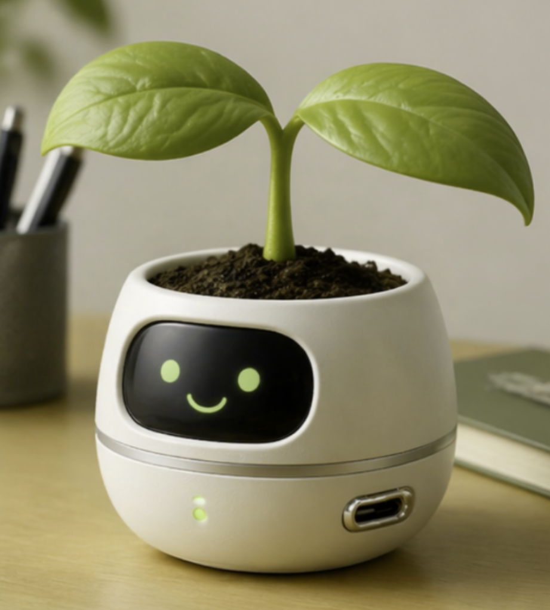
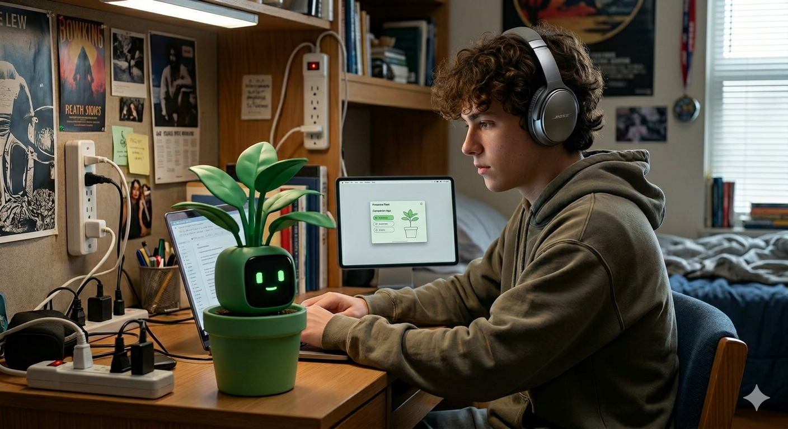

01 / SENIOR DESIGN
Mopec Tissue Insight
AI-assisted gross-tissue imaging with image-quality planning, preprocessing, annotation, validation, and expert review.
MEDICAL IMAGING · AI · QUALITYBIOMEDICAL ENGINEERING / LTU / 2027
I like engineering that I can see: images, signals, materials, prototypes, and the little details that make a system reliable.
see what i've been making ↓

CURRENTLY CURIOUS ABOUT
My work keeps pulling me toward medical imaging, AI-assisted analysis, nanotechnology, circuit simulation, and quality engineering. I also love the visual side of engineering: diagrams, interfaces, presentations, and sketching ideas before they exist.
SELECTED PROJECTS
AI-assisted gross-tissue imaging with image-quality planning, preprocessing, annotation, validation, and expert review.
MEDICAL IMAGING · AI · QUALITY
Posture sensing, calibration, thresholds + feedback.
SENSORS · SIGNALS · TESTINGCircuit simulation, Bode plots, filter behavior, and measured-vs-expected analysis.
SIMULATION · ANALYSIS · CIRCUITS
Requirements → prototypes → fabrication → user testing. Designed around a real participant and iterated from observation.
HUMAN-CENTERED DESIGN · PROTOTYPING

A friendly ambient robot concept that communicates focus through physical movement instead of another screen notification.
HCI · SENSING · VISUAL STORYTELLINGQUALITY ISN'T A FOOTNOTE
CAMERA ROLL / ORIGINAL PHOTO WALL